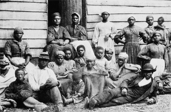
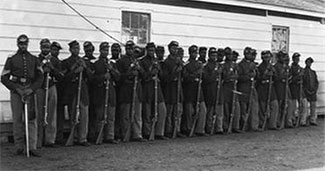

|
Contraband was the term used for fugitive slaves who crossed over Union Army
lines during the Civil War. Before the Union developed a coherent policy on
emancipation, slave refugees were neither in bondage nor free, but somewhere in
between, recognized legally as confiscated enemy property.
About a month after the Confederate attack at Fort Sumter, three slaves
crossed the Union picket lines at Fortress Monroe, Virginia, where they offered
their services to the Union Army and sought protection from their masters. Thus
began a spontaneous and grass roots effort by slaves across the South to escape
bondage. Within a few months, thousands of slaves poured over Union lines.
Wherever the Army went, slavery seemed to disintegrate in the immediate
vicinity. Because there were so many fugitive slaves in Army camps, Union
military leaders were forced to confront the future of slavery.
|

Contraband slaves in Virginia in 1862
|
General Benjamin F. Butler, the commander at Fortress Monroe, freed the first
three slaves and put them to work as Army laborers. Butler learned that
Confederates used slaves to construct fortifications, thus he declared that
fugitive slaves were enemy property, in other words, "contraband of war."
Butler's actions were one of the first steps toward emancipation. Nevertheless,
the Union had not yet formulated a policy toward fugitive slaves. Other
military officers, including Butler when he administered captured lands in
Louisiana, returned runaways because they did not have a system to care for
them.
Congress attempted to clarify the emerging problem of contrabands with the
Confiscation Act of August 6, 1861. It stated that slaveholders forfeited their
rights to any slave that had been employed by the Confederate military. While
the law did not address emancipation, it did recognize the fact that slaves
could be used as weapons of war. Consequently, it was in the best interests of
the Union military to weaken the institution of slavery.
A preliminary and uncertain federal policy did not deter slaves from seeking
their freedom, but Union forces were ill equipped to deal with thousands of
fugitive slaves. Male slaves were put to work, but the Army had little to offer
slave women and children. Northern benevolent associations rushed in food and
clothing for the destitute, and teachers arrived to educate freedmen families in
the contraband camps.
In 1862, Congress continued to refine its policy toward fugitive slaves and
inch ever closer toward emancipation. An article of war was added in March,
which forbade the Army or the Navy from returning fugitive slaves to their
owners. Slavery was abolished in Washington, D.C. in April and in the U.S.
territories in June. A second Confiscation Act passed on July 17, 1862, freed
the slaves of any person who aided the rebellion, and authorized the seizure and
sale of any other property from disloyal citizens. On the same day, Congress
recognized the labors of the contrabands at Army camps. According to the
Militia Act, any fugitive slave who worked for the military was freed, as was
his family.
|

These contrabands became a part of the army after
the issuance of the Emancipation Proclamation.
|
Lincoln and Union military leaders entered the Civil War with the desire to
not interfere with the slave system in the South, but the slaves, and the
lengthening war, forced the issue. Over 10,000 contrabands crossed Union lines
in Virginia by mid 1863. Along the Mississippi River, similar large encampments
of contrabands stretched the limits of Union supply lines. Crowded into
unhealthy camps, thousands died from disease, exposure, and even starvation. In
spite of the degradation, most refugees stayed in the camps. If they ventured
from the protection of the Union lines, contrabands were subject to marauding
guerilla bands of Confederate soldiers or recapture by their owners.
Facing a humanitarian crisis, Union leaders began to develop a policy of
refugee settlement on abandoned lands. Some were hired out to Unionist
planters, while others were placed on United States government-run plantations
on a wage-labor basis. After 1863, male contrabands were encouraged to enlist
in the Union Army. At the end of the War, Congress created the Freedmen's
Bureau to formally help ex-slaves make the transition to freedom.
Contrabands played a crucial role in forcing the Union to confront the issue
of slavery and emancipation. As the War persisted, the value of fugitive slaves
as military laborers and as soldiers helped to convince President Lincoln and
Congress to emancipate all of the slaves. Unfortunately, far too many
contrabands met an untimely death at disease-ridden camps, demonstrating the
uncertainty that accompanied freedom.
Source: Joan Waugh, ed., Facts on File Encyclopedia of American
History: Civil War and Reconstruction, 1856 to 1869 (New York: Facts on
File, 2003), 80-81.
|